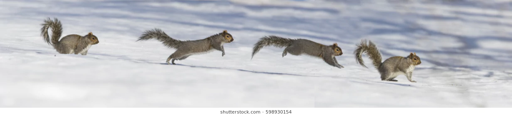
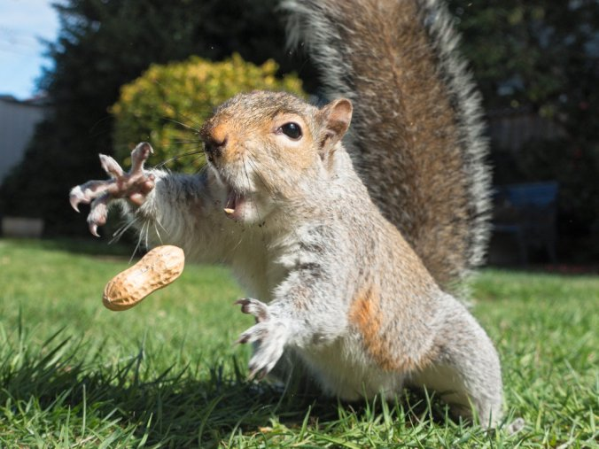

Blog about squirrel
November 24th, 2018
Squirrel
Squirrels are members of the family Sciuridae, a family that includes small or medium-size rodents. The squirrel family includes tree squirrels, ground squirrels, chipmunks, marmots (including woodchucks), flying squirrels, and prairie dogs amongst other rodents. Squirrels are indigenous to the Americas, Eurasia, and Africa, and were introduced by humans to Australia.[1] The earliest known squirrels date from the Eocene period and are most closely related to the mountain beaver and to the dormouse among other living rodent families.
Characteristics
Squirrels are generally small animals, ranging in size from the African pygmy squirrel at 7–10 cm (2.8–3.9 in) in length and just 10 g (0.35 oz) in weight, to the Laotian giant flying squirrel at 1.08 m (3 ft 7 in) in length and the Alpine marmot, which weighs from 5 to 8 kg (11 to 18 lb). Squirrels typically have slender bodies with bushy tails and large eyes. In general, their fur is soft and silky, though much thicker in some species than others. The coat color of squirrels is highly variable between—and often even within—species.[5] In most squirrel species, the hind limbs are longer than the fore limbs, while all species have either four or five toes on each paw. The paws, which include an often poorly developed thumb, have soft pads on the undersides[6] and versatile, sturdy claws for grasping and climbing.[7] Tree squirrels, unlike most mammals, can descend a tree head-first. They do so by rotating their ankles 180 degrees, enabling the hind paws to point backward and thus grip the tree bark from the opposite direction.
Feeding
Because squirrels cannot digest cellulose, they must rely on foods rich in protein, carbohydrates, and fats. In temperate regions, early spring is the hardest time of year for squirrels because the nuts they buried are beginning to sprout (and thus are no longer available to eat), while many of the usual food sources have not yet become available. During these times, squirrels rely heavily on the buds of trees. Squirrels, being primarily herbivores, eat a wide variety of plants, as well as nuts, seeds, conifer cones, fruits, fungi, and green vegetation. Some squirrels, however, also consume meat, especially when faced with hunger.[9][15] Squirrels have been known to eat small birds, young snakes, and smaller rodents, as well as bird eggs and insects. Indeed, some tropical squirrel species have shifted almost entirely to a diet of insects.
 Read more in Wikipedia
Read more in Wikipedia